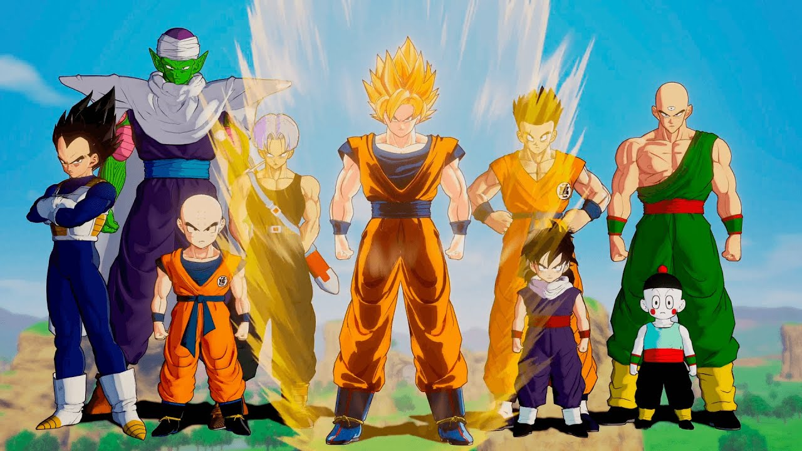

Series
-
Vikings

Esta série dramática acompanha a vida do viking Ragnar Lothbrok em sua jornada para ampliar o domínio nórdico e desafiar um líder incompetente e sem visão.
-
The 100
Quase 100 anos após um apocalipse nuclear devastar a Terra, 100 sobreviventes de uma estação espacial voltam para avaliar as condições do planeta.
-
Suits

Mesmo sem se formar e sem licença para advogar, um jovem brilhante impressiona um importante advogado e consegue uma cobiçada posição em sua firma.
-
Um Maluco no Pedaço
O jovem e descolado Will Smith se muda da Filadélfia para morar com seus tios e primos na mansão deles em Bel-Air e tenta se adaptar, sem sucesso, à realidade da elite do local.
-
Peaky Bliders
Uma notória gangue da Inglaterra de 1919 é liderada pelo cruel Tommy Shelby, um criminoso disposto a subir na vida a qualquer preço.
-
Game Of Thrones
Game of Thrones conta a históra de um lugar onde uma força destruiu o equilíbrio das estações, há muito tempo. Em uma terra onde os verões podem durar vários anos e o inverno toda uma vida, as reivindicações e as forças sobrenaturais correm as portas do Reino dos Sete Reinos.
Animes/Desenhos
-
Naruto

Guiado pelo espírito demoníaco dentro dele, o órfão Naruto aprende a controlar seus poderes como um ninja nesta série de aventura anime.
-
Dragon Ball Z
Goku foi enviado ainda bebê para a Terra com o intuito de conquistá-la. Ao ser relembrado de sua missão, Goku recusa-se a ajudar seu irmão e os Sayajins. Raça após raça de alien passa a aparecer na Terra e Goku, aliado a seu filho, seu compatriota Vegeta e os amigos que conquistou em sua primeira jornada atrás das esferas do dragão, vai fazer o que puder para manter nosso planeta a salvo.
-
Yu - Gi - Oh
O jovem estudante do ensino médio Yugi Muto derrota o campeão mundial, Seto Kaiba, em um duelo de cartas com a misteriosa ajuda do quebra-cabeça Millenium. Em razão de sua vitória inesperada, Yugi se torna famoso em todo o mundo e passa a participar de outros duelos para salvar os amigos e a família.
-
Bayblade
O anime gira em torno de Tyson Granger e seus amigos Kai Hiwatari, Max Tate, Ray Kon e Kenny. Juntos eles formam uma equipe que disputa o campeonato mundial de beyblade. Cada um deles possui seu próprio beyblade, um objeto parecido com um pião fortemente energizado que gira com muita velocidade.